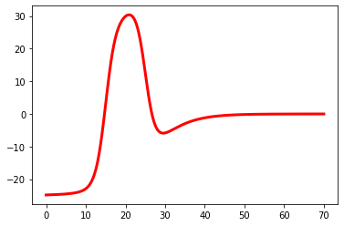
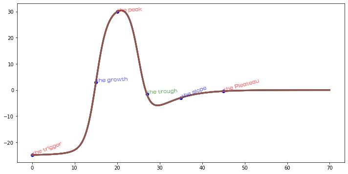

Package Name: hypecycle
hypecycle is the fundamental package needed for creating, visualizing, and annotating Gartner Hype Cycle with Python.
import numpy as np import matplotlib.pyplot as plt
def create(*x,crest1=50,crest2=25,stp_crest1=0.8,stp_crest2=0.2,midPoint=15,var=10):
'''
to create a HypeCycle Data
x: Input data
midPoint: The location of the mean value mainly controls the location of the first wave crest.
var: Displays moves or penalties for midpoint
crest1,crest2:Used to control the height of the first wave crest and the second wave crest respectively.
stp_crest1,stp_crest2:represent steepness
Recommended parameters:crest1=50,crest2=25,stp_crest1=0.8,stp_crest2=0.2,midPoint=15,var=10
x = np.linspace(0, 50, 5000)
'''
x = x
#If the user fails to submit x, the package will create a default DataSet.
if x==():
x = np.linspace(0, 70, 5000)
else:
x=x[0]
lf_11 = crest1/(1+ np.exp( 1 * stp_crest1 * (x-midPoint-var)))
lf_12 = crest1/(1+ np.exp( 1 * stp_crest1 * (x-midPoint)))
lf_13 = crest2/(1+ np.exp( 1 * stp_crest2 * (x-midPoint-var)))
hype= lf_11- lf_12- lf_13
return hype
def visualize(*x, color="red", linewidth=3, linestyle="-"):
"""
to visualize the HypeCycle Data into HypeCycle Line
"""
x = x
#If the user fails to submit x, the package will create a default DataSet.
if x==():
x = np.linspace(0, 70, 5000)
else:
x=x[0]
plt.plot(x, create(x), linewidth = linewidth, c = color,linestyle = linestyle)
def annotate(*x, x_value = 20, text = "None",color = "red",fontproperties='FZShuTi', fontsize = 13, alpha = 0.8,rotation=3):
"""
to annaotate the HypeCycle Line
"""
x = x
#If the user fails to submit x, the package will create a default DataSet
if x==():
x = np.linspace(0, 70, 5000)
else:
x=x[0]
plt.plot(x, create(x), linewidth=3)
x_val = x_value
t = text
c = color
fp= fontproperties
fs = fontsize
a = alpha
plt.rcParams["figure.figsize"] = [12, 6]
plt.scatter(x_val, create(x_val), color="blue")
plt.text(x_val, create(x_val), t ,color=c,fontproperties= fp, fontsize=fs, alpha=a,rotation=rotation)
pip install hypercycle
from hypecycle import HyperCycle
from hypecycle import HyperCycle as hc
import numpy as np x = np.linspace(0, 50, 5000) x
array([0.00000000e+00, 1.00020004e-02, 2.00040008e-02, ...,
4.99799960e+01, 4.99899980e+01, 5.00000000e+01])
#Default y = hc.create( ) y
array([-2.48323716e+01, -2.48319021e+01, -2.48314312e+01, ...,
-3.10218943e-03, -3.09351479e-03, -3.08486440e-03])
#With parameters y = hc.create(x) y
array([-24.83237162, -24.83203636, -24.83170041, ..., -0.16798742,
-0.16765397, -0.16732117])
#Default diagram hc.visualize()
#Custom chart x = np.linspace(0, 70, 5000) HC.visualize(x,"blue",8)
hc.annotate(x,x_value = 0,text = "the trigger",rotation=20) hc.annotate(x,x_value = 15,text = "the growth",color="blue") hc.annotate(x,x_value = 20,text = "the peak",color="red") hc.annotate(x,x_value = 27,text = "the trough",color="green") hc.annotate(x,x_value = 35,text = "the slope",color="blue",rotation=20) hc.annotate(x,x_value = 45,text = "the Pleateau",color="red",rotation=15)
Creator ：Chaolemen Borjigin,Sun Zhizhong
Contact： chaolemen@ruc.edu.cn
License：BSD 3
if you use hypercycle in a project that leads to publication, please acknowledge this by citing hypercycle.